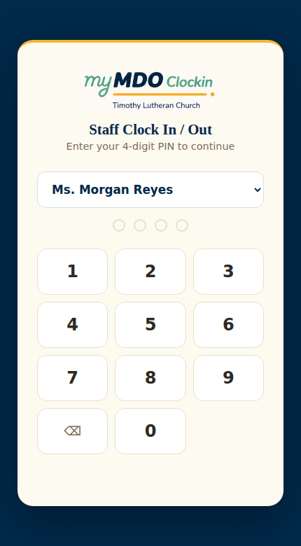
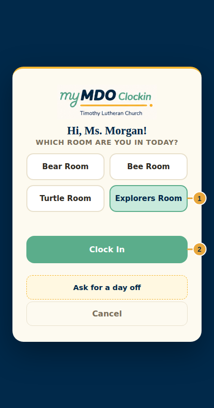
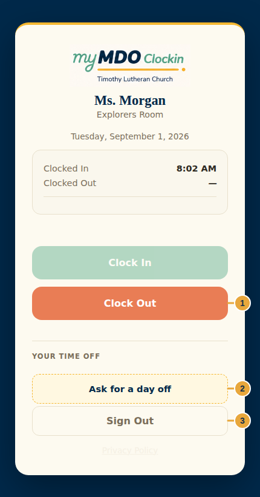
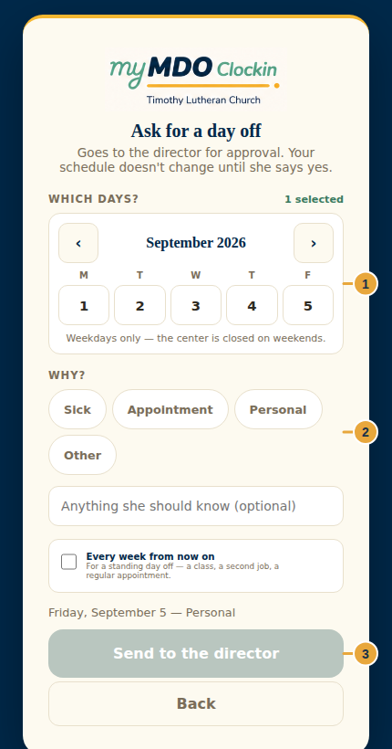

Clock In / Out
Clock In / Out
Clock In / Out Guide
Clocking in, clocking out, and asking for a day off
September 2026 · v1
Clock in at
mdo.timothystl.org/clockin.html
mdo.timothystl.org/clockin.html
Sample data only. The name and schedule shown in these screenshots are fictional
demo data. Your PIN is never stored on your phone.
Timothy Lutheran Church — Mother's Day Out
6704 Fyler Ave, St. Louis, MO 63139 · (314) 781-8673 · mdo@timothystl.org
Start here
Where to go. Clock in and out at
mdo.timothystl.org/clockin.html, on your own
phone. There is no shared clock-in tablet at the center — every staff member clocks in from their
own device.
This app is only for the time clock. Logging meals, naps, and diapers, and
messaging families, happens in the separate Staff app at
mdo.timothystl.org/staff.html — see the
Staff Guide for that.
Clocking in for the day


- Open mdo.timothystl.org/clockin.html, choose your name from the dropdown, and enter your PIN.
- The first time you clock in each day, choose which room you're in — this is what the office's daily staffing and headcount screens read.
- Tap Clock In. The screen will confirm the time.
Working in more than one room today? Clock in under the room you're starting in — you don't need
to clock in and out again just to move rooms mid-shift.
Clocking out

- Sign in the same way at the end of your shift.
- Review the Clocked In time shown at the top — this is the record your pay is built from.
- Tap Clock Out. Both times, and the total hours, will be shown.
- Tap Sign Out when you're done — your PIN is never remembered on the device.
If a time looks wrong — a missed clock-in, a forgotten clock-out — don't try to
fix it yourself. Tell the office; hourly pay is built directly from these records.
Asking for a day off

- From the clock status screen, tap Ask for a day off.
- Tap the day (or days) on the calendar. Only weekdays are selectable — the center is closed on weekends.
- Choose a reason chip (Sick, Appointment, Personal, Other) and add a note if it helps explain the request.
- For a standing day off — a class, a second job, a regular appointment — check Every week from now on instead of picking one date.
- Review the summary line, then tap Send to the director.
Your schedule doesn't change until the director approves the request. A pending
request shows under "Your time off" on the clock status screen — check back there rather than
assuming it was approved.
Location and the geofence
The clock-in app may ask permission to check your location when you clock in or out. This helps the office confirm punches happened on-site. If you decline the permission or your phone can't get a signal, your clock-in or clock-out still works — the punch is simply recorded as "location unknown" rather than blocked. Nothing about this screen prevents you from clocking in or out.
Clock In/Out quick reference
| I need to… | Best action |
|---|---|
| Clock in for my shift | Sign in, choose your room, tap Clock In |
| Clock out at the end of my shift | Sign in, tap Clock Out |
| Ask for a day off | Tap "Ask for a day off," pick days and a reason, send |
| Check if a time-off request was approved | Review "Your time off" on the clock status screen |
| Fix a wrong clock time | Contact the office — don't try to self-correct |
| Log meals, naps, or messages | Use the separate Staff app (staff.html) |
Timothy Lutheran Mother's Day Out
Office: (314) 781-8673 · Email: mdo@timothystl.org
Clock In/Out: mdo.timothystl.org/clockin.html